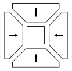
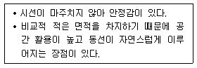
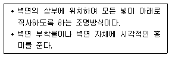
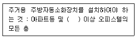
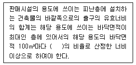
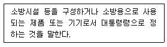
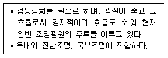

실내건축기사(구) (2015-09-19 기출문제)
1과목: 실내디자인론
1. 다음의 평면형이 나타내는 극장의 유형은?

- 애리나형
- 가변무대형
- 프로세니엄형
- 오픈스테이지형
(정답률: 88%)

2. 주택의 욕실 계획에 관한 설명으로 옳지 않은 것은?
- 방수성, 방오성이 큰 마감재료를 사용한다.
- 욕실의 조명은 방습형 조명기구를 사용한다.
- 욕실은 침실전용으로 설치하는 것이 이상적이다.
- 모든 욕실에는 기능상 욕조, 변기, 세면기가 통합적으로 갖추어지게 하여야 한다.
(정답률: 78%)
3. 극장의 관객석에서 무대 위 연기자의 세밀한 표정이나 몸동작을 볼 수 있는 시선거리의 생리적 한도는?
- 10m
- 15m
- 22m
- 35m
(정답률: 73%)
4. 주택의 부엌에서 작업 삼각형(work triangle)의 구성에 속하지 않는 것은?
- 냉장고
- 배선대
- 가열대
- 개수대
(정답률: 83%)
5. 아동실을 더욱 생동감 있게 만들어 주려고 한다. 다음 중 가장 효과적인 디자인 원리는?
- 리듬
- 조화
- 통일
- 대칭
(정답률: 94%)
6. 착시 현상의 사례 중 분트 도형의 내용으로 옳은 것은?
- 같은 길이의 수직선이 수평선보다 길어 보인다.
- 같은 길이의 직선이 화살표에 의해 길이가 다르게 보인다.
- 사선이 2개 이상의 평행선으로 중단되면 서로 어긋나 보인다.
- 같은 크기의 2개의 부채꼴에서 아래쪽의 것이 위의 것보다 커 보인다.
(정답률: 53%)
7. 균형의 원리에 관한 설명으로 옳지 않은 것은?
- 크기가 큰 것이 작은 것보다 시각적 중량감이 크다.
- 불규칙적인 형태가 기하학적 형태보다 시각적 중량감이 크다.
- 색의 중량감은 색의 속성 중 특히 명도, 채도에 따라 크게 작용한다.
- 단순하고 부드러운 질감이 복잡하고 거친 것보다 시각적 중량감이 크다.
(정답률: 92%)
8. 실내기본요소에 관한 설명으로 옳은 것은?
- 바닥은 공간의 영역 조정 기능이 없다.
- 천장을 낮추면 친근하고 아늑한 공간이 되고 높이면 확대감을 줄 수 있다.
- 눈높이보다 낮은 벽은 공간을 분할하고 높은 벽은 영역을 표시하거나 경계를 나타낸다.
- 천장은 공간을 에워싸는 수직적 요소로 수평 방향을 차단하여 공간을 형성하는 기능을 한다.
(정답률: 86%)
9. 오피스 랜드스케이프에 관한 설명으로 옳은 것은?
- 복도를 사이에 두고 양쪽에 작은 방들을 배치한 사무소 평면계획이다.
- 사무실에 업무능률 상승을 위해 조경을 도입한 방식을 말한다.
- 배치는 의사전달과 작업흐름과 같은 실제적 패턴을 고려한다.
- 세포형 오피스라고도 하며 개인별 공간을 확보하여 스스로 작업공간의 연출과 구성이 가능하다.
(정답률: 72%)
10. 다음 설명에 알맞은 거실의 가구배치 방법은?

- 대면형
- ㄱ자형
- ㄷ자형
- 자유형
(정답률: 91%)
11. 약동감, 생동감 넘치는 에너지와 운동감, 속도감을 주는 선의 종류는?
- 곡선
- 사선
- 수직선
- 수평선
(정답률: 87%)
12. 현실적 형태에 관한 설명으로 옳지 않은 것은?
- 자연형태는 조형의 원형으로서도 작용한다.
- 인위형태는 그것이 속해 있는 시대성을 갖는다.
- 디자인에 있어서 형태는 대부분이 인위형태이다.
- 모든 자연형태는 휴먼스케일과 일정한 관계를 갖는다.
(정답률: 58%)
13. 마르셀 브로이어에 의해 디자인된 의자로, 강철 파이프를 구부려서 지지대 없이 만든 의자는?
- 체스카 의자
- 파이미오 의자
- 레드 블루 의자
- 바르셀로나 의자
(정답률: 77%)
14. 다음의 실내디자인 원리 중 인간생활의 기능적 해결과 가장 밀접한 관계를 갖고 있는 것은?
- 리듬
- 척도
- 조화
- 패턴
(정답률: 72%)
15. 조명에서 불쾌 글레어의 발생 원인으로 옳지 않은 것은?
- 휘도가 높은 광원
- 시선 부근에 노출된 광원
- 눈에 입사하는 광속의 과다
- 물체와 그 주위 사이의 저휘도 대비
(정답률: 86%)
16. 실내디자인의 계획 조건을 외부적 조건과 내부적 조건으로 구분할 경우, 다음 중 내부적 조건에 속하는 것은?
- 일조 조건
- 개구부의 위치
- 소화설비의 위치
- 의뢰인의 공사예산
(정답률: 78%)
17. 다음 설명에 알맞은 건축화조명은?

- 광창 조명
- 코브 조명
- 코니스 조명
- 광천장 조명
(정답률: 77%)
18. 계단에 부딪치며 떨어지는 계단식 폭포를 무엇이라 하는가?
- 벽천
- 브라켓
- 타피스트리
- 캐스케이드
(정답률: 67%)
19. 실내디자인의 영역에 관한 설명으로 옳지 않은 것은?
- 건축 구조물에 의해 형성된 내부공간만을 대상으로 한다.
- 영리성 유무에 따라 영리공간과 비영리공간으로 구분할 수 있다.
- 가구 디자인도 실내 디자인의 영역에 포함되나 독립적으로 이루어질 수도 있다.
- 대상 공간의 생활 목적에 따라 주거공간, 사무공간, 상업공간, 전시공간, 특수공간 등으로 나눌 수 있다.
(정답률: 88%)
20. 상점계획에서 파사드 구성에 요구되는 소비자 구매심리 5단계에 속하지 않는 것은?
- 욕망(desire)
- 기억(memory)
- 주의(attention)
- 유인(attraction)
(정답률: 66%)
2과목: 색채학
21. 영·헬름홀츠의 삼원색설에 관한 설명 중 맞는 것은?
- 색의 단계와 관계있다.
- 빛의 흡수와 관계있다.
- 색의 보색과 관계있다.
- 색은 망막의 시세포와 관계있다.
(정답률: 62%)
22. 오스트발트 색상환은 무엇을 기본으로 하여 만들어졌는가?
- 먼셀의 5원색
- 뉴턴의 프리즘
- 헤링의 4원색
- 영ㆍ헬름홀츠의 3원색
(정답률: 74%)
23. "B+C+W=100"이란 이론을 만들어낸 학자는?
- 먼셀
- 뉴턴
- 오스트발트
- 맥스웰
(정답률: 78%)
24. 스캔된 원본의 색들과 인쇄된 출력물의 색들을 맞추기 위한 색채관리시스템(Color Management System, CMS)의 기준이 되는 색공간은?
- RGB 색채계
- CMYK 색체계
- CIE XYZ 색체계
- HSB 색체계
(정답률: 70%)
25. 문·스펜서(Moon. Spencer)의 색채조화론에서 조화가 되는 색의 관계 중 잘못된 것은?
- 통일조화
- 대비조화
- 동일조화
- 유사조화
(정답률: 63%)
26. 소극적인 인상을 주는 것이 특징으로 중명도, 중채도인 중간색조의 덜(dull) 톤을 사용하는 배색기법은?
- 포 까마이외 배색
- 까마이외 배색
- 토널 배색
- 톤 온 톤 배색
(정답률: 74%)
27. 점묘법으로 그린 그림이 일정 거리에서 보면 혼색되어 보인다. 이와 관련 있는 적합한 혼색은?
- 색료혼색
- 감법혼색
- 병치혼색
- 계시가법혼색
(정답률: 82%)
28. 색차에 대한 설명 중 틀린 것은?
- 색차(color difference)란 동일한 조건 하에서 계산하거나 측정한 두 색들 간의 차이를 말한다.
- 색차에서 동일한 조건이란 동일한 종류의 조명, 동일한 크기의 시료(샘플), 동일한 주변색, 동일한 관측시간, 동일한 측색 장비, 동일한 관측자 등을 말한다.
- 색차의 계산 및 색차의 측정은 색채 관련 학계 및 산업계에서 필수적인 요소이다.
- 색차의 계산 및 색차의 측정은 컴퓨터를 활용한 원색재현 과정의 핵심적인 부분은 아니다.
(정답률: 83%)
29. 터널의 출입구 부분에 조명이 집중되어 있고, 중심부에 갈수록 광원의 수가 적어지며 조도수준이 낮아지고있다. 이것은 어떤 순응을 고려한 설계인가?
- 색순응
- 명순응
- 암순응
- 무채순응
(정답률: 87%)
30. 슈브뢸(M. E. Chevreul)의 색채 조화론과 관계가 없는 것은?
- 도미넌트 컬러
- 보색 배색의 조화
- 세퍼레이션 컬러
- 동일 색상의 조화
(정답률: 62%)
31. 어떤 색채가 매체, 주변색, 광원, 조도(照度) 등이 서로 다른 환경 하에서 관찰될 때 다르게 보이는 현상은?
- 색영역 맵핑(color gamut mapping)
- 컬러 어피어런스(color appearance)
- 메타머리즘(metamerism)
- 디바이스 조정(device calibration)
(정답률: 58%)
32. 다음 중 두 색료를 혼합하여 무채색이 되는 것은?
- 검정 + 보라
- 주황 + 노랑
- 회색 + 초록
- 청록 + 빨강
(정답률: 65%)
33. 색의 삼속성이 아닌 것은?
- 색상 –Hue
- 명도 –Value
- 채도 –Chroma
- 색조 –Tone
(정답률: 85%)
34. CIE 색체계에 대한 설명 중 옳은 것은?
- 국제색채위원회에서 정한 표색법이다.
- 현색계의 가장 대표적인 표색계이다.
- XYZ 좌표계를 사용한다.
- 적, 황, 청의 원색광을 적절히 혼합하여 모든 색을 만들 수 있다는 것에 기초한다.
(정답률: 67%)
35. 색역 압축 방법(color gamut compressionmethod)은 무엇을 극복하기 위하여 고안된 방법인가?
- 색역이 다른 컬러간의 차이
- 색역이 다른 컬러들의 좌표 재현
- 색역이 다른 컬러들의 색역 맵핑 수행
- 색역이 다른 클립핑 방법
(정답률: 45%)
36. 가산혼합에서 녹색과 파랑을 혼합하면 어떤 색이 되는가?
- 회색(gray)
- 시안(cyan)
- 보라(purple)
- 검정(black)
(정답률: 83%)
37. 색이 주는 감정적 효과와 색의 3속성과의 관계에서 가장 타당성이 낮은 것은?
- 온도감 – 색상
- 중량감 – 명도
- 경연감 – 채도
- 흥분과 침정 – 명도
(정답률: 75%)
38. 부의 잔상(negative after image)에 대한 설명으로 맞는 것은?
- 어떤 색을 응시하다가 눈을 옮기면 먼저 본 색의 반대색이 잔상으로 생긴다.
- 빨간 성냥불을 어두운 곳에서 돌리면 길고 선명한 빨간 원이 그려진다.
- 사진원판과 같이 원자극의 흑색은 흑색으로, 백색은 백색으로 변화를 갖지 않는다.
- 원자극과 흡사한 잔상으로 등색(等色)잔상이 있다.
(정답률: 76%)
39. 정성적(定性的) 색채조화론에서 공통되는 원리의 조합으로 올바른 것은?
- 질서성 – 친근성 – 동류성 – 명료성
- 질서성 – 자연성 – 동류성 – 상대성
- 주관성 – 동류성 – 비모호성 – 객관성
- 동류성 – 비모호성 – 자연성 – 합리성
(정답률: 82%)
40. 우리가 영화를 볼 때 규칙적으로 화면이 연결되어 언제나 상이 지속되어 보이는 것은 어떤 현상에 의한 것인가?
- 푸르킨예 현상
- 잔상현상
- 동화현상
- 베졸드 브뤼케 현상
(정답률: 80%)
3과목: 인간공학
41. 인간공학에 있어 자극들 사이, 반응들 사이, 혹은 자극-반응 조합의 공간, 운동, 혹은 개념적 관계가 인간의 기대와 모순되지 않도록 하는 것을 무엇이라 하는가?
- 순응(adaptation)
- 양립성(compatibility)
- 접근 용이성(accessibility)
- 조절 가능성(adjustability)
(정답률: 81%)
42. 다음 중 인간의 눈에 관한 설명으로 옳은 것은?
- 암순응이 명순응보다 빠르다.
- 원추세포는 색을 구별할 수 있다.
- 수정체가 두꺼워지면 원시안이 된다.
- 빛을 감지하는 간상세포는 수정체에 존재한다.
(정답률: 76%)
43. 다음 중 통화이해도가 높은 것부터 낮은 순서대로 올바르게 나열한 것은?
- 문장 ＞ 단어 ＞ 음절
- 음절 ＞ 단어 ＞ 문장
- 단어 ＞ 음절 ＞ 문장
- 문장 ＞ 음절 ＞ 단어
(정답률: 55%)
44. 우리나라에서는 소음이 발생하는 작업을 실시할 때 1일 8시간 작업을 기준으로 몇 데시벨 이상일 경우 소음작업으로 구분하는가?
- 80
- 85
- 90
- 100
(정답률: 69%)
45. 인간의 절대적 판단(absolute judgement)능력을 정보량으로 나타낼 경우 가장 적합한 것은?
- 3 bits
- 8 bits
- 10 bits
- 16 bits
(정답률: 46%)
46. 다음 중 다이얼(Dial)식 계기의 표시방법으로 가장 적합하지 않은 것은?
- 눈금이 고정되고 지침이 움직이는 Dial형의 글자는 수직으로 한다.
- 지침이 여러 번 회전하는 형태의 Dial식 계기에서는 0점을 꼭대기에 두어야 한다.
- Dial형으로 지침이 고정되고 눈금이 움직이는 형에서 숫자는 시계방향으로 써 놓는다.
- Dial형으로 눈금이 유한할 때는 최대 눈금과 시발눈금(보통 0)과의 사이를 떼지 않고 표시하여야 한다
(정답률: 65%)
47. 다음 중 행동과정을 통한 인간실수의 분류로 적합하지 않은 것은?
- Input Error
- Omission Error
- Feed Back Error
- Information processing Error
(정답률: 58%)
48. 적온(適溫)에서 추운 환경으로 바뀔 때, 인체의 반응에 대한 설명으로 틀린 것은?
- 체표면적이 감소한다.
- 대사가 증진되고 식욕이 항진된다.
- 근육의 긴장이 증가하고, 떨림이 생긴다.
- 혈액은 피부를 경유하는 순환량이 증가한다.
(정답률: 60%)
49. 다음 중 근육의 대사(代謝)에 대한 설명으로 틀린 것은?
- 운동에 의한 산소소비량은 일정 수준 이상 증가하지 않는다.
- 젖산은 유기성 과정에 의하여 물과 CO2로 분해되어 발산된다.
- 일반적으로 신체 활동시 산소의 공급이 충분할 때 젖산이 많이 축적된다.
- 일정 수준 이상의 활동이 종료된 후에도 일정 기간 동안은 산소가 더 필요하게 된다.
(정답률: 66%)
50. Gestalt의 법칙 중 형태, 규모, 색채, 질감 등에 있어서 비슷한 시각적 요소들이 연관되어 보이는 경향이 있는 법칙은?
- 유사성
- 접근성
- 연속성
- 폐쇄성
(정답률: 74%)
51. 다음 중 호흡계(respiratory system)에 관한 설명으로 틀린 것은?
- 호흡계는 산소를 공급하고, 이산화탄소를 제거하는 일을 수행한다.
- 호흡계는 비강, 후두 등의 전도부와 폐포, 폐포관 등의 호흡부로 이루어진다.
- 허파에서 공기와 혈액 사이에 일어나는 기체교환을 내호흡 또는 조직호흡이라 한다.
- 호흡이란 생명현상을 유지하기 위하여 산소를 섭취고 이산화탄소를 배출하는 일련의 과정을 말한다.
(정답률: 61%)
52. 다음 중 시각장치보다 청각장치를 사용하는 것이 바람직한 경우는?
- 정보의 내용이 복잡한 경우
- 정보의 내용이 후에 재참조되는 경우
- 정보가 즉각적인 행동을 요구하는 경우
- 직무상 정보의 수신자가 한 곳에 머무르는 경우
(정답률: 80%)
53. 다음 중 인간의 귀가 4000Hz 부근에서 가장 민감한 이유를 올바르게 설명한 것은?
- 4000Hz 부근에서 머리의 공명이 가장 잘 일어나기 때문이다.
- 고막이 특정주파수에 민감하게 반응하기 때문이다.
- 귀의 구조상 귀의 공진주파수가 4000Hz 부근이기 때문이다.
- 4000Hz의 음이 가장 멀리 퍼지기 때문이다.
(정답률: 64%)
54. 다음 중 적색 글씨를 청색 바탕에 표시하면 입체로 보이며 눈이 피로해지는 이유로 옳은 것은?
- 색입체시 현상 때문이다.
- 극성(Polarity) 현상 때문이다.
- 푸르킨예(Prukinje) 현상 때문이다.
- 적색과 청색에 약시 현상 때문이다.
(정답률: 36%)
55. 다음 중 단위 입체각(solid angle)당 광원에서 방출되는 빛의 양을 나타내는 단위로 옳은 것은?
- 럭스(Lux)
- 푸트 캔들(fc)
- 와트(W)
- 칸델라(cd)
(정답률: 46%)
56. 조명 수준과 과업 퍼포먼스(performance)와의 관계를 올바르게 설명한 것은?
- 조명 수준이 증가함에 따라 과업 퍼포먼스는 감소한다.
- 과업 퍼포먼스는 조명 수준과 관계없이 일정하다.
- 조명 수준이 적정 수준 이상이 되면 과업 퍼포먼스는 더 이상 증가하지 않는다.
- 조명 수준과 과업 퍼포먼스는 선형적 비례 관계를 가진다.
(정답률: 61%)
57. 다음 중 한국인 인체치수조사 사업에 있어 인체측정의 부위별 기준점과 그 정의가 잘못 연결된 것은?
- 머리마루점 : 머리수평면을 유지할 때 머리 부위 정중선 상에서 가장 위쪽
- 목앞점 : 목밑둘레선에서 앞 정중선과 만나는 곳
- 손끝점 : 셋째 손가락의 끝
- 발끝점 : 셋째 발가락의 끝
(정답률: 79%)
58. 다음 중 눈과 대상물이 이루는 시각이 2분( ' )인 사람의 시력(최소가분시력)으로 옳은 것은?
- 0.⑤
- 0.5
- 1.5
- 2.0
(정답률: 82%)
59. 다음 중 동작경제의 원칙에 있어 작업장의 배치에 관한 원칙에 해당하는 것은?
- 공구의 기능을 결합하여 사용하도록 한다.
- 모든 공구나 재료는 자기 위치에 있도록 한다.
- 가능하다면 쉽고도 자연스러운 리듬이 생기도록 동작을 배치한다.
- 눈의 초점을 모아야 작업을 할 수 있는 경우는 가능하면 없애도록 한다.
(정답률: 46%)
60. 서서하는 작업을 위한 작업대의 높이를 설계할 때 참고하여야 할 인체측정지수는?
- 눈높이
- 어깨 높이
- 오금 높이
- 팔꿈치 높이
(정답률: 78%)
4과목: 건축재료
61. 다음 중 수치가 높을수록 시멘트의 응결 속도가 빨라지는 인자에 해당하지 않는 것은?
- 온도
- 습도
- 분말도
- 알루미네이트 비율
(정답률: 63%)
62. 미장재료 중 회반죽에 대한 설명으로 옳지 않은 것은?
- 경화속도가 느리고, 점성이 적다.
- 일반적으로 연약하고, 비내수적이다.
- 여물은 접착력 증대를, 해초풀은 균열방지를 위해 사용된다.
- 모래는 바름 두께가 클수록 많이 넣지만 정벌용에는 넣지 않는다.
(정답률: 55%)
63. 단열재의 선정조건에 관한 설명으로 옳지 않은 것은?
- 사용연한에 따른 변질이 없을 것
- 유독성 가스가 발생되지 않을 것
- 열전도율과 흡수율이 낮을 것
- 구조재로 활용가능한 정도의 역학적인 강도를 가질것
(정답률: 70%)
64. 목재에 주입시켜 인화점을 높이는 방화제와 가장 거리가 먼 것은?
- 물 유리
- 붕산암모늄
- 인산나트륨
- 인산암모늄
(정답률: 62%)
65. 엔지니어링 플라스틱 중의 하나로 나일론 수지라고 도 하며, 비중 1.14, 인장강도 800kgf/cm2, 휨강도 1,⑤0kgf/cm2 정도의 강인한 수지로, 알루미늄 새시나 도어체크, 또는 커튼롤러 등에 사용되고 있는 수지는?
- 폴리카보네이트 수지
- 페놀 수지
- 폴리아미드 수지
- 후프화 비닐수지
(정답률: 44%)
66. 점토제품의 소성에 관한 설명으로 옳지 않은 것은?
- 소성시간이 소성온도보다 제품에 미치는 영향이 더 크다.
- 소성온도 측정은 Seger cone법 또는 열전대에 의한다.
- 소성온도와 시간은 점토성분, 제품종류에 따라 다르다.
- 소성온도 범위는 800～1500℃ 정도이다.
(정답률: 73%)
67. 정부에서 시행중인 청정건강주택 건설기준에는 7개의 최소기준을 모두 충족하고 3개 이상의 권장기준을 적용하도록 하고 있다. 여기에서 3개 이상의 권장기준에서 요구하는 기능성 건축자재와 가장 거리가 먼 것은?
- 흡방습 건축자재
- 항균 성능 건축자재
- 음이온방출 건축자재
- 항곰팡이 성능 건축자재
(정답률: 70%)
68. 시멘트 풍화에 대한 설명으로 옳지 않은 것은?
- 시멘트가 저장 중 공기와 접촉하여 공기 중의 수분 및 이산화탄소를 흡수하면서 나타나는 수화반응이다.
- 풍화한 시멘트는 강열감량이 감소한다.
- 시멘트가 풍화하면 밀도가 떨어진다.
- 풍화는 고온다습한 경우 급속도로 진행된다.
(정답률: 45%)
69. 절대건조밀도가 2.6g/cm3이고, 단위용적질량이 1,750kg/m3인 굵은 골재의 공극률은?
- 30.5%
- 32.7%
- 34.7%
- 36.2%
(정답률: 56%)
70. 매스콘크리트에 발생하는 균열의 제어방법이 아닌 것은?
- 고발열성 시멘트를 사용한다.
- 파이프 쿨링을 실시한다.
- 포졸란계 혼화재를 사용한다.
- 온도균열지수에 의한 균열발생을 검토한다.
(정답률: 70%)
71. 온도변화에 따른 탄소강의 기계적 성질에 관한 설명 중 옳지 않은 것은?
- 연신율은 약 250℃를 경계로 온도가 높아질수록 커진다.
- 탄성률은 온도가 높아질수록 커진다.
- 인장강도는 약 300℃를 경계로 온도가 높아질수록 작아진다.
- 탄성계수는 온도가 높아질수록 작아진다.
(정답률: 34%)
72. 천연수지·합성수지 또는 역청질 등을 건성유와 같이 열반응시켜 건조제를 넣고 용제에 녹인 것은?
- 페인트
- 래커
- 에나멜
- 바니시
(정답률: 55%)
73. KS F 3113(구조용 합판)에 따른 구조용 합판의 품질기준에 해당하지 않는 항목은?
- 접착성
- 함수율
- 비중
- 휨강도
(정답률: 37%)
74. 금속판에 관한 설명으로 옳지 않은 것은?
- 알루미늄판은 경량이고 열반사도 좋으나 알칼리에 약하다.
- 스테인레스 강판은 내식성이 필요한 제품에 사용된다.
- 함석은 철판에 주석도금을 한 것으로 아황산가스에 약하다.
- 연판은 X선 차단효과가 있고 내식성도 크다.
(정답률: 51%)
75. 평판성형되어 유리대체재로서 사용되는 것으로 유기질 유리라고 불리우는 것은?
- 페놀수지
- 폴리에틸렌수지
- 요소수지
- 아크릴수지
(정답률: 78%)
76. 목구조의 접합철물로 적합하지 않은 것은?
- 꺽쇠
- 듀벨
- 보통볼트
- 드라이브 핀
(정답률: 65%)
77. 다음 중 멜라민수지 접착제의 사용이 가장 적합한 재료는?
- 목재
- 금속
- 고무
- 유리
(정답률: 64%)
78. 바닥용으로 사용되는 모자이크 타일의 재질로서 가장 적당한 것은?
- 도기질
- 자기질
- 석기질
- 토기질
(정답률: 74%)
79. 다음 도료 중 내수성이 가장 나쁜 도료는?
- 수성페인트
- 유성바니시
- 염화비닐수지도료
- 알루미늄페인트
(정답률: 75%)
80. 콘크리트에 금속, 유리, 합성수지 등의 단섬유(短纖維)가 혼입 보강되면 주로 어느 성질이 향상되는가?
- 인성 및 내충격성
- 흡음성 및 차음성
- 압축강도
- 방수성 및 내열성
(정답률: 54%)
5과목: 건축일반
81. 한옥을 중국 및 일본의 살림집과 비교해 보았을 때 한옥의 특성과 가장 거리가 먼 것은?
- 한옥은 기단이 낮다
- 한옥은 처마가 깊다
- 한옥은 신체치수를 기본 모듈로 하고 있다.
- 한옥은 구들과 마루를 동시에 수용하고 있다.
(정답률: 60%)
82. 다음은 자동소화장치를 설치하여야 하는 특정소방대상물과 관련된 법령이다. 빈 칸에 알맞은 내용으로 옳은 것은?

- 20층
- 25층
- 30층
- 40층
(정답률: 55%)
83. 다음은 건축물 바깥쪽으로의 출구의 설치기준에 관한 법령이다. 빈 칸에 알맞은 내용으로 옳은 것은?

- 0.5m
- 0.6m
- 0.7m
- 0.8m
(정답률: 59%)
84. 건축물의 설계자가 건축물에 대한 구조의 안전을 확인하는 경우에 건축구조기술사의 협력을 받아야 하는 경우에 해당되지 않는 것은?
- 6층 이상인 건축물
- 다중이용 건축물
- 특수구조 건축물
- 깊이 10m 이상의 토지 굴착공사
(정답률: 55%)
85. 스페이스프레임에 대한 설명으로 옳지 않는 것은?
- 스페이스프레임은 크게 뼈대구조와 내력외피구조로 나눌 수 있다.
- 뼈대 망눈의 크기는 마무리재의 치수, 망눈의 미관, 단재의 좌굴길이 등에 의하여 선정된다.
- 재료는 품질 · 가공성 등의 이유로 강재가 많이 쓰이며 경량재인 알루미늄도 쓰인다.
- 일반적으로 망눈이 큰 것이 부재수 · 절점수가 많아져 비경제적이다.
(정답률: 60%)
86. 철근콘크리트 슬래브에 관한 설명으로 옳지 않은 것은?
- 1방향 슬래브에서는 장변뱡향의 철근이 주근, 단변방향의 철근이 부근이 된다.
- 1방향 슬래브의 두께는 최고 100mm 이상으로 한다.
- 1방향 슬래브에서는 정모멘트 철근 및 부모멘트 철근에 직각방향으로 수축·온도철근을 배치하여야 한다.
- 4변에 의해 지지되는 2방향 슬래브 중에서 단변에 대한 장변의 비가 2배를 넘으면 1방향 슬래브로 해석한다.
(정답률: 40%)
87. 건물의 평면형태에 따른 역학적 특징을 설명한 것으로 옳지 않은 것은?
- 정사각형의 평면은 바람이나 지진과 같은 수평력에 대하여 안정적이다.
- 원형 평면은 같은 표면적을 갖는 다른 형태의 구조물에 비해 풍하중이 크게 작용한다.
- 다각형 평면을 갖는 건축물은 다방향 대칭축을 갖기 때문에 수평하중의 작용 시각 작용방향에 따라 부재의 응력이 현저하게 달라질 수 있다.
- 방사형 평면은 안정감이 있어 보이지만 구조적 장점은 다른 평면에 비해 많지 않다.
(정답률: 61%)
88. 다음 중 비잔틴 양식의 건축물은?
- 성 소피아성당
- 랭스성당
- 아미앵성당
- 노틀담성당
(정답률: 72%)
89. 총 12층인 쇼핑센터 건축물에서 6층 이상의 거실면적의 합계가 18,000m2인 경우 승강기 최소 설치 대수는? (단, 16인승 이상의 승강기로 설치한다.)
- 3대
- 4대
- 5대
- 6대
(정답률: 40%)
90. 철골구조의 고력볼트접합에 관한 설명 중 옳지 않은 것은?
- 접합부의 강성이 높아서 접합부의 변형이 거의 없다.
- 볼트에는 마찰접합의 경우 전단력이 생기지 않는다.
- 계기공구를 사용하여 죄므로 정확한 강도를 얻을 수 있다.
- 피로강도가 높아 볼트가 풀리기 쉽다.
(정답률: 68%)
91. 방화구획의 설치 기준으로 옳지 않은 것은?
- 주요구조부가 내화구조 또는 불연재료로 된 건축물로서 연면적 1,000m2 넘는 건축물에 해당된다.
- 방화구획은 내화구조의 바닥, 벽 및 갑종방화문으로 구획하여야 한다.
- 기준에 적합한 자동방화셔터로도 방화구획을 할 수 있다.
- 주요구조부가 내화구조 또는 불연재료로 된 주차장에 반드시 설치하여야 한다.
(정답률: 54%)
92. 건축물의 신축·증축·개축 등에 대한 행정기관의 동의 요구를 받은 소방본부장 또는 소방서장은 건축허가 등의 동의요구서류를 접수한 날부터 얼마 이내에 동의여부를 회신하여야 하는가?
- 3일 이내
- 4일 이내
- 5일 이내
- 6일 이내
(정답률: 77%)
93. 무창층의 개구부 면적을 계산하는 데 있어 이 개구부에 해당되기 위한 기준으로 옳지 않은 것은?
- 크기는 지름 50cm 이상의 원이 내접할 수 있는 크기일 것
- 해당 층의 바닥면으로부터 개구부 밑부분까지의 높이가 1.2m 이내일 것
- 도로 또는 차량이 진입할 수 있는 빈터를 향할 것
- 내부 또는 외부에서 쉽게 부수거나 열 수 없는 고정창일 것
(정답률: 70%)
94. 거실의 용도에 따라 규정된 조도기준값이 다른 하나는? (단, 바닥에서 85cm의 높이에 있는 수평면의 조도)
- 독서
- 포장
- 집회
- 일반사무
(정답률: 38%)
95. 지붕 물매에 관한 설명으로 옳지 않은 것은?
- 수평거리와 높이가 같을 때의 물매를 된물매라고 한다.
- 귀물매는 주로 추녀 마름질에 사용된다.
- 물매는 수평거리 10cm에 대한 직각 삼각형의 수직높이로 나타낸다.
- 수평거리보다 높이가 작을 때의 물매를 평물매라고 한다.
(정답률: 38%)
96. 커튼, 실내장식 등의 방염대상물품의 방염성능 기준 중 불꽃에 의하여 완전히 녹을 때까지 불꽃의 접촉회수는 몇 회 이상인가?
- 2회
- 3회
- 5회
- 7회
(정답률: 77%)
97. 공장의 용도로 쓰는 건축물의 주요구조부를 내화구조로 하기 위한 바닥면적의 합계는 최소 얼마 이상인가?
- 2000m2
- 3000m2
- 4000m2
- 5000m2
(정답률: 36%)
98. 널 옆이 서로 물려지게 하고 그 한 옆에서 못질하여 못머리가 감추어지며 마루의 진동에도 못이 솟아오르는 일이 없는 마루깔기법은?
- 맞댄쪽매
- 반턱쪽매
- 제혀쪽매
- 빗쪽매
(정답률: 66%)
99. 건축관계법령상 방화구조의 기준으로 옳지 않은 것은?
- 철망모르타르로서 그 바름두께가 2cm 이상인 것
- 시멘트모르타르 위에 타일을 붙인 것으로서 그 두께의 합계가 2cm 이상인 것
- 석고판위에 시멘트모르타르 또는 회반죽을 바른 것으로서 그 두께의 합계가 2.5cm 이상인 것
- 심벽에 흙으로 맞벽치기한 것
(정답률: 54%)
100. 소방관계법규에서 정의하는 다음 내용에 해당하는 용어는?

- 특정소방대상물
- 소화활동설비
- 소방용품
- 소화용수설비
(정답률: 68%)
6과목: 건축환경
101. 건축물의 에너지절약을 위한 계획 내용으로 옳지 않은 것은?
- 외벽 부위는 외단열로 시공한다.
- 건축물의 체적에 대한 외피면적의 비를 가능한 한 작게 한다.
- 외부 공기의 도입을 위해 건물의 창 및 문은 가능한 한 크게 설계한다.
- 공동주택은 인동간격을 넓게 하여 저층부의 일사 수 열량을 증대시킨다.
(정답률: 76%)
102. 잔향시간에 관한 설명으로 옳은 것은?
- 잔향시간은 실의 면적에 항상 비례한다.
- 잔향시간은 짧을수록 음의 명료도가 저하된다.
- 평균음에너지밀도가 6dB 감소하는데 걸리는 시간을 의미한다.
- 음악감상을 주로 하는 실은 회화청취를 주로 하는 실보다 잔향시간을 길게 하는 것이 좋다.
(정답률: 60%)
103. 간접조명에 관한 설명으로 옳지 않은 것은?
- 조명률이 낮다.
- 실내면 반사율의 영향이 크다.
- 국부적으로 고조도를 얻기 용이하다.
- 경제성보다 분위기를 목표로 하는 장소에 적합하다.
(정답률: 70%)
104. 다음 중 음의 3요소에 속하지 않는 것은?
- 음색
- 음의 폭
- 음의 고저
- 음의 크기
(정답률: 32%)
1⑤. 다음의 공기조화방식 중 전공기방식에 속하지 않는 것은?
- 단일덕트방식
- 2중덕트방식
- 팬코일유닛방식
- 멀티존유닛방식
(정답률: 63%)
106. 환기에 관한 설명으로 옳지 않은 것은?
- 자연환기량은 실내외의 온도차가 클수록 많아진다.
- 풍력환기는 건물의 외벽면에 가해지는 풍압이 원동력이 된다.
- 개구부의 전후에 압력차가 있으면 고압측에서 저압측으로 공기가 흐른다.
- 많은 환기량을 요구하는 실에는 반드시 자연환기와 기계환기를 병용하여야 한다.
(정답률: 47%)
107. 조명의 눈부심에 관한 설명으로 옳지 않은 것은?
- 눈이 암순응 될수록 눈부심이 강하다.
- 광원의 휘도가 클수록 눈부심이 강하다.
- 광원의 크기가 작을수록 눈부심이 강하다.
- 광원이 시선에 가까울수록 눈부심이 강하다.
(정답률: 72%)
108. 다중이용시설 중 실내주차장의 경우, 이산화탄소의 실내공기질 유지기준으로 옳은 것은?
- 100ppm 이하
- 500ppm 이하
- 1000ppm 이하
- 2000ppm 이하
(정답률: 67%)
109. 흡음재료에 관한 설명으로 옳지 않은 것은?
- 천공판 공명기에 다공재를 넣으면 고주파수의 흡음률이 감소된다.
- 판진동 흡음재는 흡음판이 막진동하기 쉬운 얇은 것 일수록 흡음률이 크다.
- 다공성 흡음재는 재료의 두께를 증가시키면 저주파수의 흡음률이 증가된다.
- 단일공동 공명기는 공명에 의하여 특정 주파수의 음만을 효과적으로 흡음한다.
(정답률: 39%)
110. 다음 설명에 알맞은 광원의 종류는?

- 형광램프
- 할로겐전구
- 고압나트륨램프
- 저압나트륨램프
(정답률: 62%)
111. 각종 급수방식에 관한 설명으로 옳지 않은 것은?
- 고가수조방식은 급수압력이 일정하다.
- 수도직결방식은 위생성 측면에서 바람직한 방식이다.
- 압력수조방식은 단수시에 일정량의 급수가 가능하다.
- 펌프직송방식은 일반적으로 하향급수 배관 방식으로 배관이 구성된다.
(정답률: 51%)
112. 스테판-볼츠만의 법칙에 관한 설명으로 옳은 것은?
- 물체에서 복사되는 열량은 그 표면의 절대 온도에 반비례한다.
- 물체에서 복사되는 열량은 그 표면의 절대 온도의 2승에 비례한다.
- 물체에서 복사되는 열량은 그 표면의 절대 온도의 3승에 비례한다.
- 물체에서 복사되는 열량은 그 표면의 절대 온도의 4승에 비례한다.
(정답률: 58%)
113. 다음 중 실내조명설계 과정에서 가장 먼저 이루어져야 할 사항은?
- 조명방식의 선정
- 소요조도의 결정
- 전등종류의 선정
- 조명기구의 배치계획
(정답률: 80%)
114. 열교현상에 관한 설명으로 옳지 않은 것은?
- 열교현상이 발생하면 구조체 전체의 단열성이 저하된다.
- 열교현상이 발생하는 부위는 표면온도가 높아지므로 표면결로의 발생이 억제된다.
- 조적조 건물의 경우 외단열이 내단열에 비해 열교현상 방지에 효과적이다.
- 벽이나 바닥, 지붕 등의 건물부위에 단열이 연속되지 않은 부분이 있을 때 발생한다.
(정답률: 69%)
115. 최대수요전력을 구하기 위한 것으로 최대수요전력의 총부하용량에 대한 비율을 백분율로 나타낸 것은?
- 부하율
- 부등률
- 수용률
- 감광보상률
(정답률: 47%)
116. 차음에 관한 설명으로 옳지 않은 것은?
- 두꺼운 양탄자는 아이들이 뛰는 것에 의한 충격음의 차음성능이 크다.
- 체육관 아래층에의 마루충격을 저감하기 위해 슬래브를 두껍게 하는 것이 좋다.
- 집합주택의 인접세대간의 차음성능은 복도와 베란다창에서의 우회음에도 영향을 받는다.
- 작은 환기공에서의 투과음은 큰 창에서의 투과음과 비교해 양적으로 작지만, 청감상 문제가 되기도 한다.
(정답률: 46%)
117. 다음 중 불쾌지수의 결정 요소로만 구성된 것은?
- 기온, 습도
- 기온, 기류
- 습도, 기류
- 기온, 복사열
(정답률: 83%)
118. 어느 중공벽의 열관류율값이 1.0W/m2·K이다. 이벽체에 단열재를 덧붙여서 열관류율값을 0.5W/m2·K로 낮추려 할 때 요구되는 단열재의 두께는? (단, 단열재의 열전도율은 0.032W/m·K 이다.)
- 약 22mm
- 약 27mm
- 약 32mm
- 약 37mm
(정답률: 35%)
119. 실내 탄산가스 농도를 900ppm으로 유지하기 위한 필요환기량은? (단, 1인당 탄산가스 토출량이 0.013m3/hㆍ 인, 외기 중의 탄산가스 농도는 400ppm이다.)
- 26m3/h · 인
- 39m3/h · 인
- 52m3/h · 인
- 65m3/h · 인
(정답률: 30%)
120. 플러시 밸브식 대변기에 관한 설명으로 옳지 않은 것은?
- 대변기의 연속사용이 가능하다.
- 일반 가정용으로 주로 사용된다.
- 화장실을 넓게 사용할 수 있다는 장점이 있다.
- 세정음은 유수음도 포함되기 때문에 소음이 크다.
(정답률: 64%)